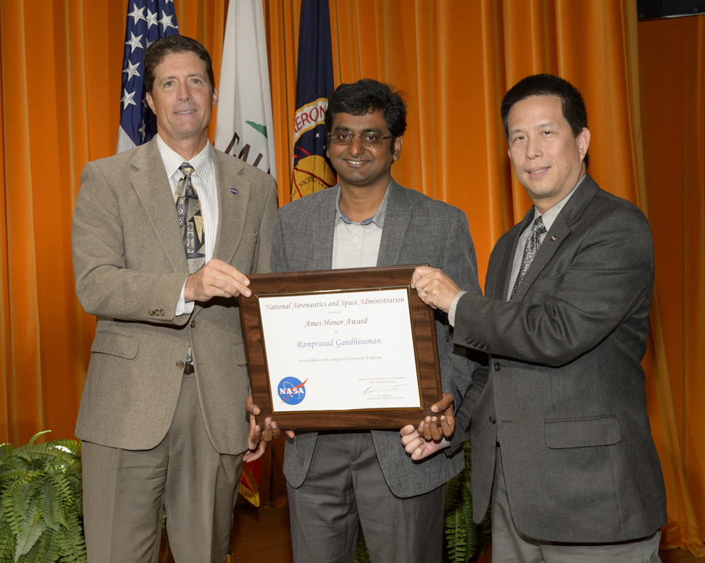

About
I am a deep-tech entrepreneur, materials scientist, and technologist with expertise in plasma-based manufacturing, printed electronics, and advanced materials.
I am the Founder and CEO of Space Foundry Inc., a Silicon Valley startup spun out of NASA Ames/USRA. I built the company from the ground up to commercialize plasma jet printing technology for next-generation electronics and manufacturing applications.
Executive Summary
Entrepreneur and deep-tech leader with a track record of developing, commercializing, and deploying plasma-based manufacturing technologies. Founder of a NASA spinoff startup, with experience spanning research, product development, customer engagement, IP, licensing, fundraising, and revenue generation.
Core Skills & Expertise
Technical Expertise
- Plasma processing and plasma jet systems
- Printed electronics and additive manufacturing
- Materials science and surface engineering
- Graphene and nanomaterials processing
- Sensors, biosensors, and functional materials
- Process development, characterization, and scale-up
Entrepreneurship & Business
- Deep-tech startup building and commercialization
- Product-market fit discovery
- Fundraising and investor engagement
- NASA/USRA licensing and technology transfer
- Customer acquisition, sales, and partnerships
- Contracts, NDAs, and joint development agreements
Leadership & Execution
- Hiring, team building, and leadership
- Program and project management
- Government, academic, and industry collaboration
- Principal Investigator on R&D programs
- Research-to-product execution
- Post-sales customer engagement
Research & Technical Impact
My work sits at the intersection of materials science, plasma physics, and advanced manufacturing. I developed plasma jet printing technology at NASA Ames and commercialized it through Space Foundry.
- Development of plasma jet printing technology at NASA Ames, recognized through NASA Ames Honor and Patent Awards
- Commercialization of plasma-based manufacturing systems
- Early work in graphene and nanomaterials processing
- Development of biosensors and plasma surface functionalization platforms
- Principal/Co-Investigator on NASA, DoD, NSF, and DoE projects
Projects
Plasma Jet Printing Platform
Core technology developed at NASA Ames and commercialized through Space Foundry. The platform enables direct-write plasma-based printing of electronic materials and manufacturing on complex 3D surfaces.
In-Space Manufacturing of Electronics
Development of plasma printing technologies for microgravity environments with applications in space-based manufacturing, on-demand electronics, and future space infrastructure.
Conformal Electronics Manufacturing
Printing electronics directly onto structural surfaces for aerospace, automotive, robotics, sensors, and advanced electronics applications.
Plasma Surface Functionalization & Biosensors
Development and commercialization of plasma processes for high-throughput biosensor functionalization and advanced surface engineering.
Media & Talks
Selected technical talks, speaker profiles, and demonstrations highlighting plasma jet printing, in-space manufacturing of electronics, conformal electronics, and precision digital plasma deposition.
Selected Talks & Speaker Profiles
Technology Demonstrations
NASA Awards & Recognition
NASA Ames Honor Award
Ames Honor Award for exceptional ingenuity in inventing and developing plasma jet printing technology for space missions.
NASA Ames Honor Awards recognize individuals and teams whose work demonstrates outstanding technical achievement, innovation, service, and mission impact at NASA Ames Research Center. This recognition highlights the invention and development of plasma jet printing technology and its relevance to future space manufacturing.


Additional Recognition
- NASA Patent Award for developing plasma jet printing technology
- NASA Group Achievement Award
- Dublin City University Commercialization Award
Press & Recognition
Press & Media Coverage
Selected coverage of Space Foundry, plasma jet printing, in-space electronics manufacturing, and related technology commercialization.
Awards
- NASA Ames Honor Award - exceptional ingenuity in inventing and developing plasma jet printing technology for space missions
- NASA Patent Award - recognition for plasma jet printing technology invention
- NASA Group Achievement Award
- Dublin City University Commercialization Award
Publications & Patents
My complete publication record is available on Google Scholar.
My patent portfolio includes issued and pending patents in plasma processing, printed electronics, surface engineering, and advanced manufacturing. View patents on Google Patents.
Professional Experience
Founder & CEO — Space Foundry Inc. (2016–Present)
Commercializing plasma jet printing technology; leading product development, sales, fundraising, customer relationships, government engagement, IP, and partnerships.
Research Scientist — NASA Ames / USRA (2012–2017)
Developed plasma jet printing technology, generated seed funding, and built collaborations across NASA centers.
Postdoctoral Researcher — Dublin City University (2007–2012)
Developed and commercialized plasma surface technologies; published extensively and filed multiple patents.
Contact
Email: ram@spacefoundry.us
Email: ramprasad.gandhiraman@gmail.com
Website: www.spacefoundry.us